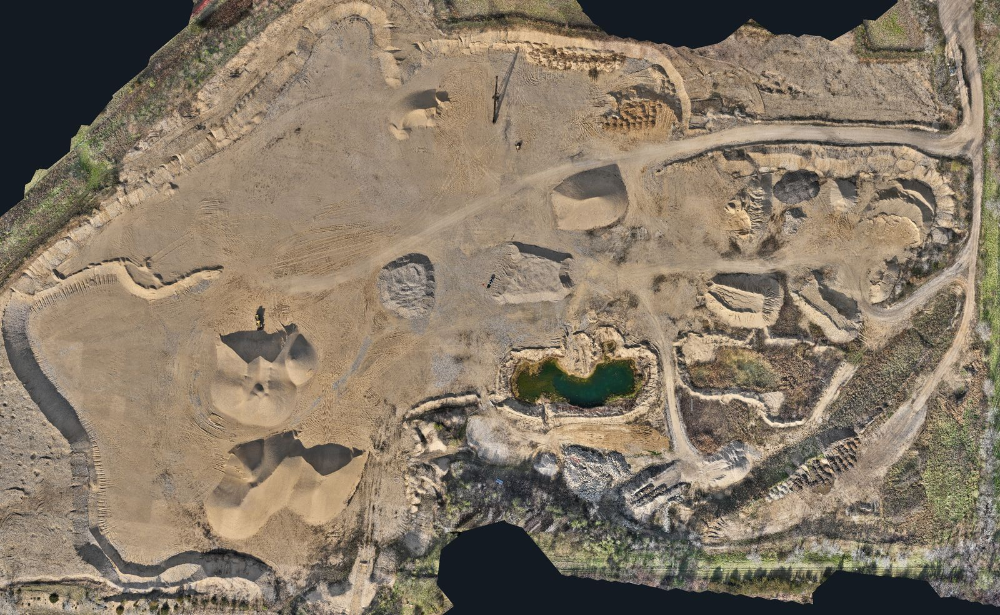

Tested accuracy · ASPRS Edition 2 (2024)
Elevated Data| Grounded Truth
Intentionality is important when raw numbers become real data. At Novak Geospatial Solutions™, Elevated Data is what the drone captures from the air, and Grounded Truth is the proof, measured on the ground, that the data is where it says it is. When a client will rely on the numbers, the deliverable is not finished until it has both. Nothing in drone mapping requires that proof, so it is easy to leave out. Here it is the step the work is built around. That is why the mapping workflow was tested against the ASPRS Positional Accuracy Standards for Digital Geospatial Data, the standard that engineers, surveyors, and public agencies use to state how accurate a map is.
The Grounded Truth: Tested Results
Horizontal
0.10 ft (3.0 cm)
Tested RMSE
Vertical, bare ground
0.09 ft (2.6 cm)
Tested RMSE
Lower is better. Both bars use the same 0 to 0.25 ft scale.
- What this workflow achievedThe 33-checkpoint test, with methods, residuals, and findings.Full accuracy report (PDF, 10 pages)
- What a project receivesThe checkpoint results measured on the site, with a table that opens in GIS or a spreadsheet.Sample verification report (PDF)Checkpoint file (CSV)
Accuracy statement. This data set was tested to meet ASPRS Positional Accuracy Standards for Digital Geospatial Data, Edition 2, Version 2 (2024) for a 0.16 ft (5.0 cm) RMSEH horizontal positional accuracy class. The tested horizontal positional accuracy was found to be RMSEH = 0.10 ft (3.0 cm). The non-vegetated vertical accuracy measured in the same test was RMSEV = 0.09 ft (2.6 cm), below the RMSE of the 0.20 ft (6.0 cm) vertical accuracy class. A “tested to meet” statement is not made for vertical accuracy until the National Geodetic Survey mark check is resolved.
A separate check on a published National Geodetic Survey mark found ellipsoid heights 0.04 to 0.16 ft low. The cause is unresolved. The report explains what that means when the data is used for absolute elevations. Check shots on additional published NGS marks, each with a leveled NAVD88 height and a precise ellipsoid height, are planned to determine whether the difference follows the equipment or the mark. This page and the report will be updated with the result.
The finished orthomosaic and digital surface model were tested against 33 independently surveyed checkpoints that were withheld from model adjustment, across a 34.4-acre validation area in Dane County, Wisconsin, on November 18, 2026. Horizontal RMSE was 0.10 ft (3.0 cm), and bare-ground vertical RMSE was 0.09 ft (2.6 cm). Both figures include a survey repeatability estimate based on seven repeat pairs.
What to specify. In a scope of work, state the intended use of the data, the target RMSE (horizontal, vertical, or both), the project control or coordinate system and vertical datum, and, where it matters, a limit on the largest individual checkpoint error. If verification exceeds the agreed target, the residuals and any known cause are provided, and corrective action or acceptance is discussed before the data is used for that purpose.
The Test at a Glance
01The site
34.4 acres of open pit floor, 39 surveyed targets

- 33independent checkpoints used
- 5ground control points (GCPs)
- 4quadrants, 7 to 10 checkpoints each
- 1checkpoint excluded: target folded by wind
02Ground truth
Every point surveyed the same way

- Plumb on a bipod. GNSS rover on a 2.00 m pole, tip on the target center.
- Fixed RTK, 30-second average. Network corrections from WISCORS, fixed solutions only.
- Checked on an NGS mark. Before and after fieldwork.
- Re-shot hours later. Seven points re-observed on a new fix to measure survey repeatability.
03The flight
One RTK mapping mission, processed with checkpoints withheld
- 175 ftabove ground
- 8,317photos, nadir and 45° oblique
- 98.4%RTK fixed photo positions
- 0.64 inorthomosaic pixel (1.6 cm)
- 85 / 80%forward / side overlap
- 0checkpoints used to build the map
04The errors
Measured on the delivered map and surface model
Switch the map in step 01 to Errors to see where each one falls.
Horizontal error at each checkpoint (ft)
Vertical error at each checkpoint (ft)
Each dot is one checkpoint. The class RMSE applies to all points together, not to each point, so a few individual errors can exceed it. Reported RMSE includes checkpoint survey uncertainty.
05The result
How the Truth Was Grounded
- Date and site: November 18, 2026, across about 34 acres of pit floor at an active aggregate pit in Dane County, Wisconsin.
- Checkpoints: 34 checkpoints were set and 33 were used in the assessment, more than the 30 the standard requires. One target was folded over by wind during the flight. None were used to build the map.
- Control: 5 ground control points (GCPs), surveyed the same way as the checkpoints.
- Ground survey: network RTK GNSS on the Wisconsin WISCORS network, checked against a National Geodetic Survey mark before and after fieldwork.
- What was tested: the delivered orthomosaic and digital surface model, not the software's internal fit report.
- Survey error included: checkpoint survey uncertainty is combined with the checkpoint residual RMSE in quadrature, as Edition 2 requires.
- Nothing removed for a poor result: every valid checkpoint is reported. The one exclusion is documented with a photo in the report.
- Equipment and software: DJI Matrice 4E with network RTK, Emlid Reach RX2 GNSS receiver, DJI Terra.
- Flight: 175 ft above ground, 85% forward and 80% side overlap, 0.64 in (1.6 cm) map pixels.
- Coordinates: NAD83(2011) Wisconsin county coordinates (WISCRS, US survey feet) and NAVD88 elevations (GEOID18).
What the Result Covers
The numbers above apply to the map that was tested: open, bare ground inside the 34.4-acre validation area, flown and processed with the settings listed. The flight covered 54.4 acres, and ground outside the validation area was not tested. They show what this workflow achieves under good conditions.
They are not a guarantee for every project. Vegetation, steep faces, water, tall structures, satellite reception near steel and other large metal surfaces, flight height, and GCP layout all change what is achievable. Accuracy targets for a project are agreed before the flight.
Grounded Truth on Every Project
Every mapping project that carries an accuracy requirement gets routine project verification on site. Where horizontal accuracy is the requirement, the minimum is 5 independent checkpoints. Where vertical accuracy is required, the minimum is 5 GCPs and 5 independent checkpoints. The checkpoint results are reported with the deliverables, so the accuracy of your data is measured on your site, not inferred from this test. For projects that require a formal ASPRS accuracy assessment, the applicable standard, target accuracy, and checkpoint plan are agreed before the flight. Reported, not claimed.
The full ASPRS test is repeated at least once a year and whenever primary equipment or processing software changes.
Working With Your Surveyor or Engineer
Novak Geospatial Solutions™ provides photogrammetric mapping and measurement data. It does not establish or re-establish property boundaries, and its deliverables are not stamped survey documents. Data is delivered in the project coordinate system with the GCPs, checkpoint residuals, and processing report included, so a licensed surveyor or engineer of record can review it, tie it to their own control, and decide how to rely on it.
Technical FAQs
Was accuracy measured on the deliverables or on the processing software's report?
On the deliverables. Horizontal error was measured from target centers in the delivered orthomosaic, and vertical error from the delivered surface model at each surveyed checkpoint. The software's aerotriangulation residuals are reported separately and are not used as the result.
Were the checkpoints independent of the GCPs?
Yes. The 33 checkpoints were separate targets from the 5 GCPs and were withheld from model adjustment. They were spread across all four quadrants of the test area.
How was the ground survey tied to the datum?
By network RTK on the Wisconsin WISCORS network, in NAD83(2011) with NAVD88 elevations from GEOID18. The setup was checked on a published National Geodetic Survey mark before and after fieldwork, and a sample of points was re-observed hours later on a new satellite solution. Survey repeatability, estimated from seven repeat pairs, was 0.04 ft (1.3 cm) horizontal and 0.04 ft (1.3 cm) vertical, and it is combined into the reported results. The check on the NGS mark agreed horizontally within 0.053 ft and read 0.04 to 0.16 ft low in ellipsoid height. That difference is unresolved.
Does the result apply to vegetated ground?
No. Photogrammetry maps the visible surface, so the vertical result applies to bare, open ground only. Vegetated vertical accuracy was not tested.
Does it establish the accuracy of stockpile volumes?
Not directly. The test measured vertical accuracy on the open pit floor. A stockpile volume also depends on how well the pile surface is captured and how the pile base is defined, which is documented on each volume report.
Can a project use the firm's own GCPs?
Yes. GCPs and checkpoints set by the project surveyor can be used in place of, or alongside, points surveyed for the flight, and the data can be delivered in the project's coordinate system.
What comes with the data for review?
The GCP and checkpoint coordinates, the checkpoint residual table, the processing report, and the coordinate system and vertical datum for every file.
How current is the test?
The test date is shown above. It is repeated at least once a year and whenever primary equipment or processing software changes.
Novak Geospatial Solutions™, a BUCK2NINETY LLC company